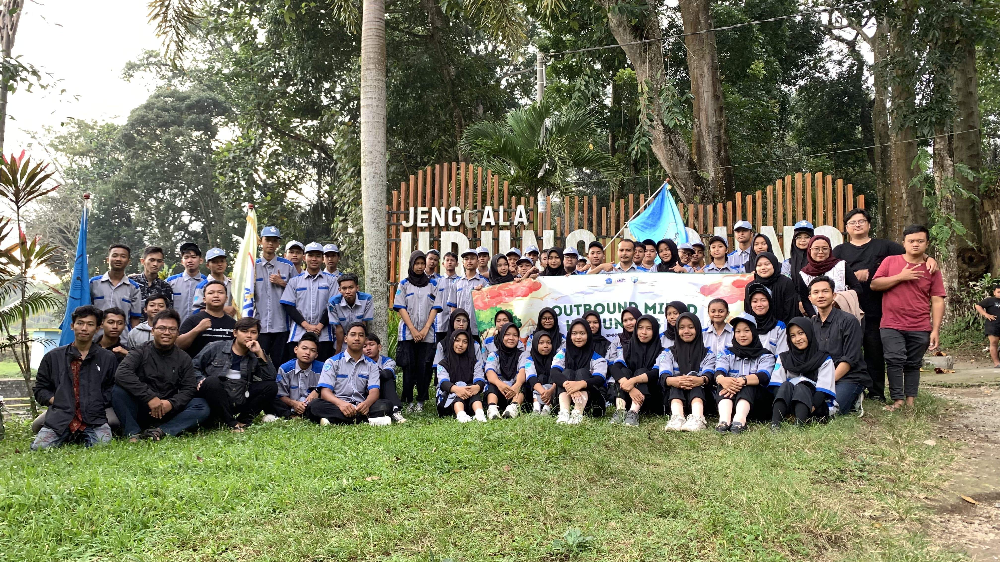

Selamat Datang di Website KITS SMKN 1 Nglegok
Silakan navigasi menggunakan menu di atas untuk melihat informasi komunitas kami.

Diklat Komunitas
Suasana belajar yang seru dan interaktif untuk memperkuat skill dan semangat kolaborasi antar anggota komunitas.

Push Materi
Meningkatkan kemampuan belajar dengan ahli IT

Outbond
Membangun kekompakan, kepemimpinan, dan kerja sama tim melalui aktivitas seru dan menantang di alam terbuka.